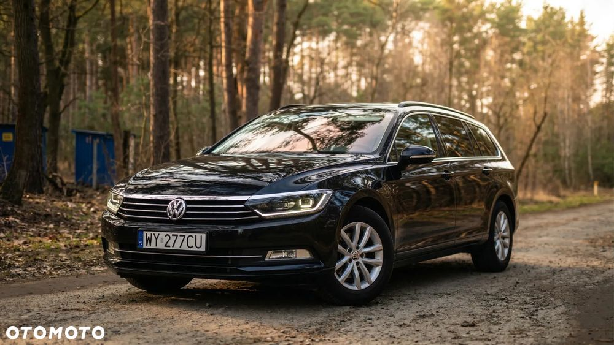
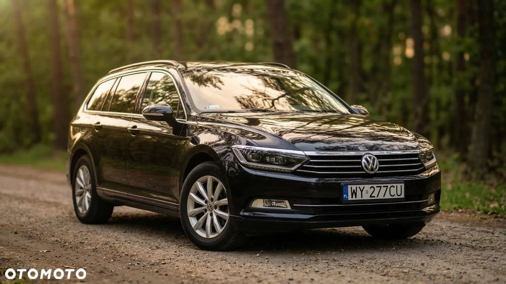
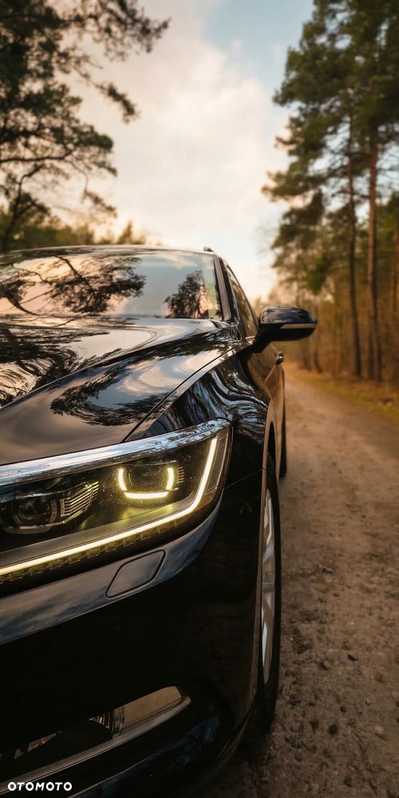
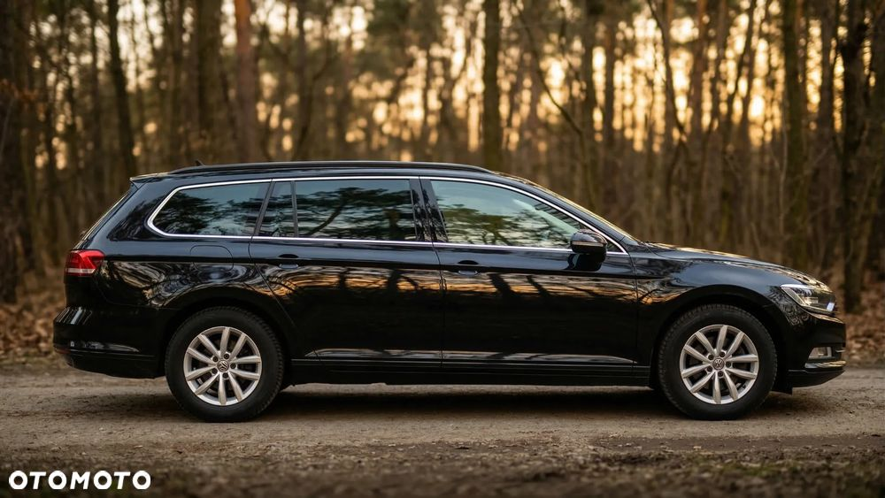
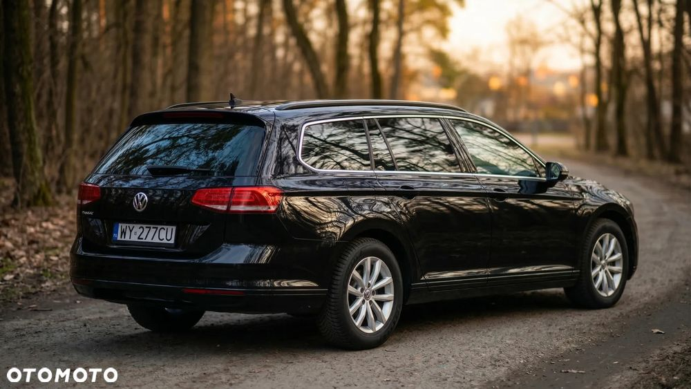
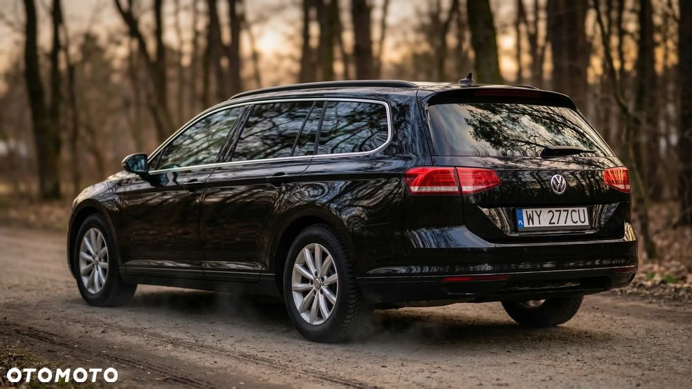
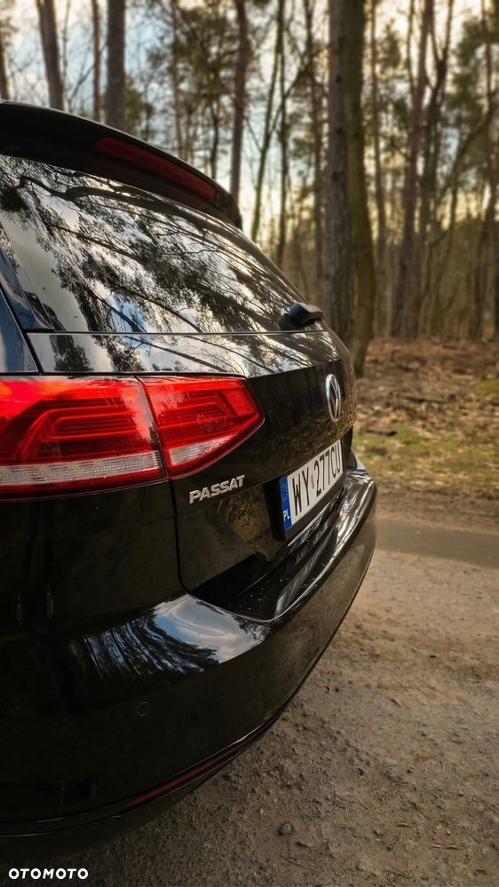
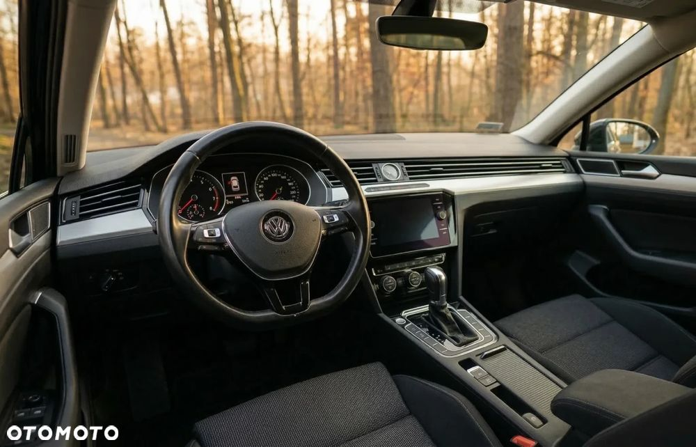
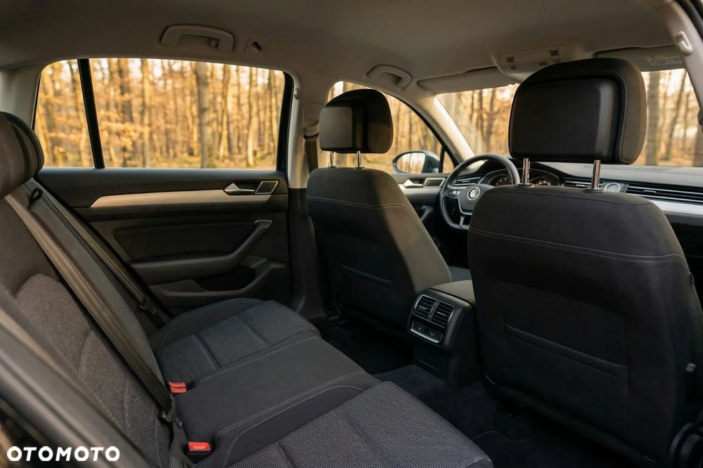
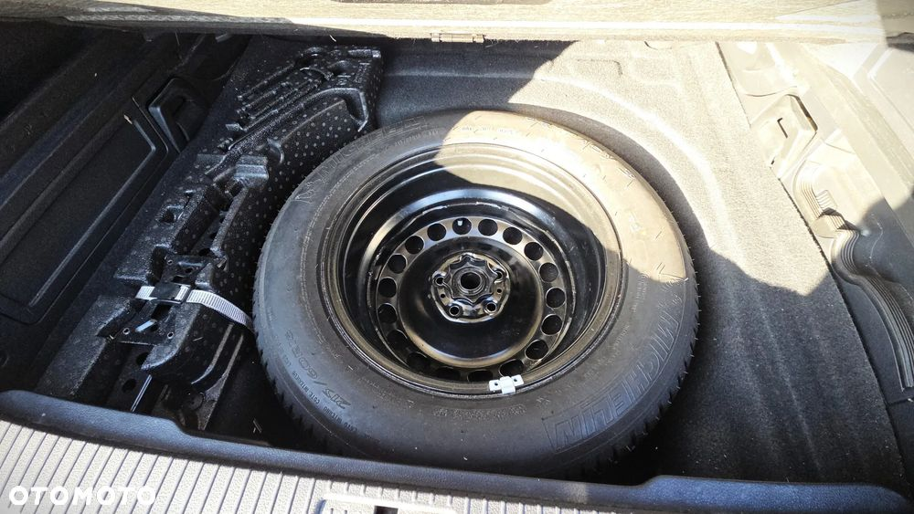

Volkswagen Passat 1.8 TSI BMT Comfortline DSG
53900 PLN
231 000 km
Samochód, regularnie serwisowany i gotowy do dalszej eksploatacji.
Sprzedaż na podstawie pełnej faktury VAT 23%, co czyni ofertę idealną dla firm (możliwość odliczenia VAT oraz korzystnego finansowania w leasingu lub kredycie samochodowym).
Dane techniczne:
- Rok produkcji: 2018
- Silnik: 1.8 TSI, 180 KM (dynamiczny, poprawiona generacja)
- Przebieg: 231 000 km (głównie trasy, co widać po stanie wnętrza)
- Wersja wyposażenia: Comfortline
- Kolor: Czarny Deep perłowy
- Status: Samochód krajowy, bezwypadkowy
- Stan techniczny: Samochód jest w pełni sprawny. W ostatnim czasie przeszedł serwis – wymieniono tarcze oraz klocki (przód i tył), co gwarantuje bezpieczeństwo i oszczędność dla nowego właściciela na start, filtry oraz olej. Skrzynia biegów pracuje płynnie, a zawieszenie jest sztywne i niewybite.
Wyposażenie (wersja Comfortline + dodatki):
- Klimatyzacja automatyczna 3-strefowa (Climatronic)
- Komfortowe fotele ErgoComfort z elektryczną regulacją oparcia kierowcy
- Czujniki parkowania przód i tył z wizualizacją na ekranie
- System Front Assist (monitorowanie odległości z funkcją awaryjnego hamowania)
- Tempomat adaptacyjny oraz ogranicznik prędkości
- Oryginalne alufelgi VW
- Przyciemniane szyby tylne
- System multimedialny z dotykowym ekranem i Bluetooth
- Czujnik deszczu oraz czujnik zmierzchu
- Wielofunkcyjna skórzana kierownica z łopatkami do zmiany biegów
- Najwyższa opcja reflektorów przednich TOPLED z wycinaniem oraz doświetlaniem
Forma sprzedaży: Faktura VAT 23%. Cena brutto: 53 900 PLN Cena netto: 43 821 PLN
Kupujący jest zwolniony z opłaty skarbowej PCC 2% (oszczędność ok. 1100 zł).
Uwagi: Prawe tylne drzwi są lekko zarysowane co widać na ostatnim zdjęciu.
Zapraszam do kontaktu i na jazdę próbną.
